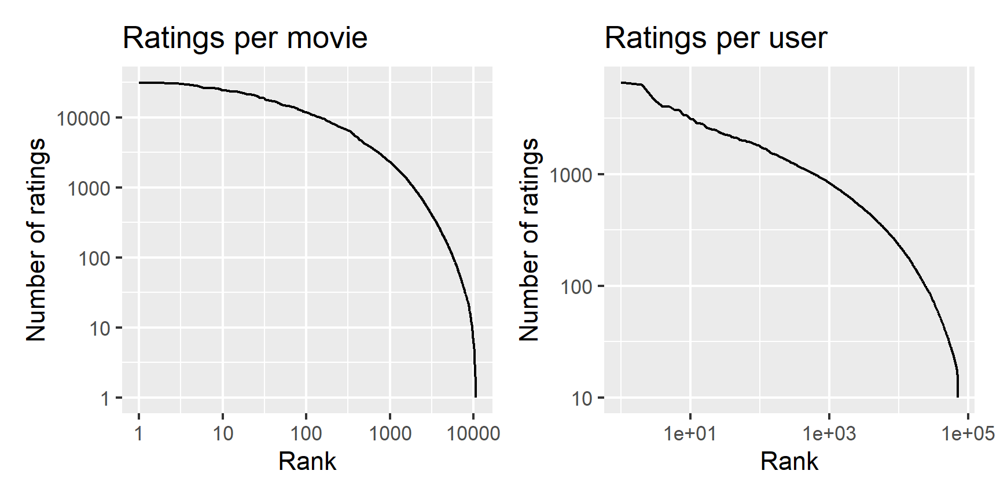
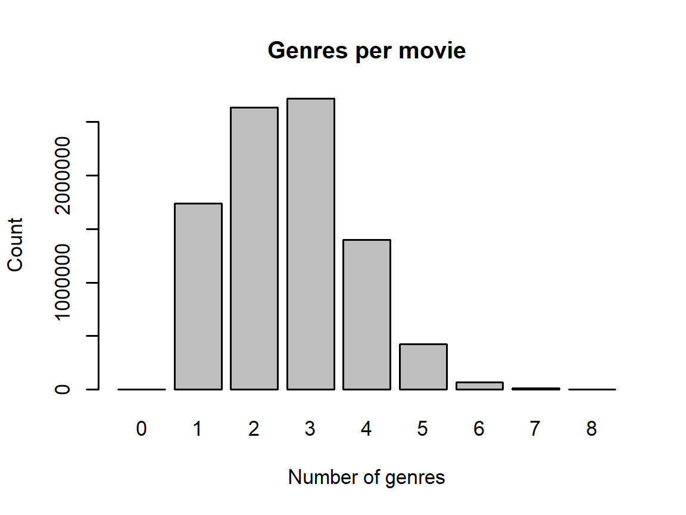

Chapter 1 Introduction
This report partially fulfills the requirements for the HarvardX course PH125.9x: “Data Science: Capstone”. The objective of this process is to build a movie recommendation system using the MovieLens dataset. The 10M version (GroupLens 2009) of this dataset was used for this project.
Using the code provided by the course, the 10 million records of the MovieLens 10M dataset are split
into the edx partition, for building the movie recommendation system, and the validation
partition, for evaluating the proposed system. The validation dataset contains roughly 10 percent
of the records in the MovieLens 10M dataset. The code for generating these two datasets is provided
below:
##########################################################
# Create edx set, validation set (final hold-out test set)
##########################################################
# NOTE: this code was modified from the course-provided version for speed.
# MovieLens 10M dataset:
# https://grouplens.org/datasets/movielens/10m/
# http://files.grouplens.org/datasets/movielens/ml-10m.zip
# STEP 1: download and unzip 'ml-10m.zip' as necessary
if(!dir.exists("ml-10M100K")) dir.create("ml-10M100K")
dl <- "ml-10M100K/ratings.zip"
if(!file.exists(dl))
download.file("https://files.grouplens.org/datasets/movielens/ml-10m.zip", dl)
ratings_file <- "ml-10M100K/ratings.dat"
if(!file.exists(ratings_file)) unzip(dl, ratings_file)
movies_file <- "ml-10M100K/movies.dat"
if(!file.exists(movies_file)) unzip(dl, movies_file)
# STEP 2a: Load the ratings file. This file is delimited using double colons.
ratings <- str_split(read_lines(ratings_file), fixed("::"), simplify = T) |>
as.data.frame() |>
set_colnames(c("userId", "movieId", "rating", "timestamp")) |>
mutate(userId = as.integer(userId),
movieId = as.integer(movieId),
rating = as.numeric(rating),
timestamp = as_datetime(as.integer(timestamp)))
# STEP 2b: Load the movies file. Again, this file is delimited using double colons.
movies <- str_split(read_lines(movies_file), fixed("::"), simplify = T) |>
as.data.frame() |>
set_colnames(c("movieId", "title", "genres")) |>
mutate(movieId = as.integer(movieId))
# STEP 3: Join the `ratings` and `movies` data tables and save to `movielens`.
movielens <- left_join(ratings, movies, by = "movieId")
# STEP 4: Split the `movielens` dataset into the `edx` and `validation` sets.
# Validation set will be 10% of MovieLens data
set.seed(1, sample.kind="Rounding")
test_index <- createDataPartition(y = movielens$rating, times = 1, p = 0.1, list = FALSE)
edx <- movielens[-test_index,]
temp <- movielens[test_index,]
# Make sure userId and movieId in validation set are also in edx set
validation <- temp |> semi_join(edx, by = "movieId") |> semi_join(edx, by = "userId")
# Add rows removed from validation set back into edx set
removed <- anti_join(temp, validation)
edx <- rbind(edx, removed)
# STEP 5; convert timestamps to datetime
edx <- edx |> mutate(timestamp = as_datetime(timestamp)) |> as.data.table()
validation <- validation |> mutate(timestamp = as_datetime(timestamp)) |> as.data.table()
rm(dl, ratings, movies, test_index, temp, movielens, removed)1.1 Data description
The data consists of ten million movie ratings, each expressed using six variables. The number
of ratings in the edx and validation partitions are nrow(edx) and nrow(validation),
respectively, i.e., 9000055 and 999999. The six variables are:
colnames(edx)## [1] "userId" "movieId" "rating" "timestamp" "title" "genres"and are defined as follows:
userId: an integer from 1 to 71567 denoting the user who made the rating.movieId: an integer from 1 to 65133 denoting which movie was rated.rating: a multiple of 0.5, from 0.5 to 5.0.timestamp: aPOSIXctobject representing the time at which the rating was made.title: the name of the movie rated, suffixed which the year of release in parentheses.genres: a list of genres for the rated movie, delimited by the pipe (‘|’) character.
Note that only integer ratings were supported before February 2003; the earliest half-star rating is:
temp <- edx[edx$rating %% 1 == 0.5]
temp[which.min(temp$timestamp)] |> kable(align='rrrrll', booktabs = T) |> row_spec(0, bold = T)| userId | movieId | rating | timestamp | title | genres |
|---|---|---|---|---|---|
| 53996 | 4018 | 3.5 | 2003-02-12 17:31:34 | What Women Want (2000) | Comedy|Romance |
The density of the rating matrix is:
nrow(edx) / max(edx$userId) / max(edx$movieId)## [1] 0.001930773The number of ratings per movie and per user in edx is plotted below.
# Count the number of ratings for each movie and rank the movies by ratings received
ratings_per_movie <- edx |>
group_by(movieId) |>
summarise(title = first(title), genres = first(genres), n_ratings = n()) |>
mutate(rank = frank(-n_ratings))
# Count the number of ratings for each user and rank the users by ratings given
ratings_per_user <- edx |>
group_by(userId) |>
summarise(n_ratings = n()) |>
mutate(rank = frank(-n_ratings))
# Plot the number of ratings for each movie and user, sorted by rank
plot1 <- ratings_per_movie |>
ggplot(aes(rank,n_ratings)) + geom_line() +
scale_x_log10() + scale_y_log10() +
xlab('Rank') + ylab('Number of ratings') + labs(title = 'Ratings per movie')
plot2 <- ratings_per_user |>
ggplot(aes(rank,n_ratings)) + geom_line() +
scale_x_log10() + scale_y_log10() +
xlab('Rank') + ylab('Number of ratings') + labs(title = 'Ratings per user')
rm(ratings_per_movie, ratings_per_user)
par(cex = 0.7)
plot1 + plot2
1.1.1 Movie genres
The list of possible genres, the number of movies in each genre, and the mean number of ratings per movie in each genre is given as follows:
# Get the list of possible genres
genres <- edx$genres |> unique() |> str_split('\\|') |> flatten_chr() |>
unique() |> sort() |>
tail(-1) # remove "(no genres listed)"
# Construct a data.table with one entry per movie
temp <- edx |> group_by(movieId) |>
summarise(title = first(title), genres = first(genres))
# Find the number of movies and ratings for each genre
genre_summary <-
data.table(
Genre = genres,
Movies = sapply(genres, function(g)
sum(temp$genres %flike% g)),
Ratings = sapply(genres, function(g)
sum(edx$genres %flike% g)),
"Mean Rating" = sapply(genres, function(g) {
edx[edx$genres %flike% g,'rating']$rating |> mean()
})
) |>
mutate("Ratings per movie" = Ratings / Movies)
rm(temp)
genre_summary |> arrange(desc(`Mean Rating`)) |>
kable(align='lrrrr', digits = c(0,0,0,2,1), booktabs = T, linesep = "") |> row_spec(0, bold = T)| Genre | Movies | Ratings | Mean Rating | Ratings per movie |
|---|---|---|---|---|
| Film-Noir | 148 | 118541 | 4.01 | 801.0 |
| Documentary | 481 | 93066 | 3.78 | 193.5 |
| War | 510 | 511147 | 3.78 | 1002.2 |
| IMAX | 29 | 8181 | 3.77 | 282.1 |
| Mystery | 509 | 568332 | 3.68 | 1116.6 |
| Drama | 5336 | 3910127 | 3.67 | 732.8 |
| Crime | 1117 | 1327715 | 3.67 | 1188.6 |
| Animation | 286 | 467168 | 3.60 | 1633.5 |
| Musical | 436 | 433080 | 3.56 | 993.3 |
| Western | 275 | 189394 | 3.56 | 688.7 |
| Romance | 1685 | 1712100 | 3.55 | 1016.1 |
| Thriller | 1705 | 2325899 | 3.51 | 1364.2 |
| Fantasy | 543 | 925637 | 3.50 | 1704.7 |
| Adventure | 1025 | 1908892 | 3.49 | 1862.3 |
| Comedy | 3703 | 3540930 | 3.44 | 956.2 |
| Action | 1473 | 2560545 | 3.42 | 1738.3 |
| Children | 528 | 737994 | 3.42 | 1397.7 |
| Sci-Fi | 754 | 1341183 | 3.40 | 1778.8 |
| Horror | 1013 | 691485 | 3.27 | 682.6 |
The number of genres for each movie is plotted as a histogram below:
genre_counts <- table(str_count(edx$genres, '\\|') + 1 - str_count(edx$genres, 'no genres'))
par(cex = 0.7)
barplot(genre_counts, xlab = 'Number of genres', ylab = 'Count', main = 'Genres per movie')
Therefore it is likely better to analyze genre combinations rather than individual genres. The following code confirms that over half of all movies have either two or three genres:
sum(genre_counts[c('2','3')])/sum(genre_counts)## [1] 0.5954341.2 Project Objective
The objective of this project is to estimate movie ratings given the values of the other five variables. The goodness of the proposed recommender system is evaluated using the root mean squared error (RMSE): \[ \text{RMSE} = \sqrt{\frac{1}{\left|\mathcal{T}\right|}\sum_{(u,i)\in\mathcal{T}} \left(y_{u,i} - \hat{y}_{u,i}\right)^2} \] where \(y\) denotes the true values of movie ratings in the test set \(\mathcal{T}\), \(\hat{y}\) denotes the estimated values, and \(N\) denotes the number of observations in the test set.
The library function caret::RSME is used in this report for RSME evaluation.
Note that minimizing the RMSE is equivalent to minimizing the sum of the square errors, i.e., \[ \text{SE} = \sum_{(u,i)\in\mathcal{T}} \left(y_{u,i} - \hat{y}_{u,i}\right)^2. \] In matrix form, this can be thought of as the square of the \(L_{2,2}\) or Frobenius norm of the prediction errors, i.e., \[ \text{SE} = \left\Vert Y - \hat{Y} \right\Vert_{2,2}^2, \] where \(Y - \hat{Y}\) is defined as zero for user-movie pairs not in the test set.